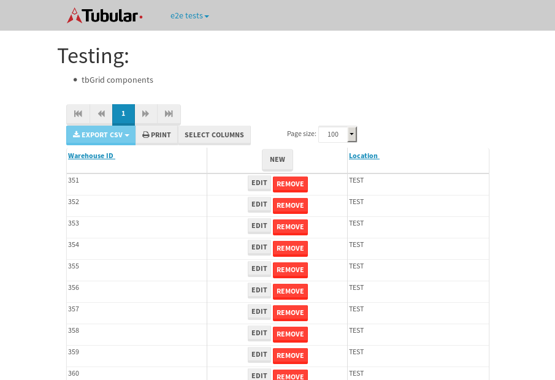

tbColumn.Grid Sorting - 178.001sTests: 5Skipped: 0Failures: 3 should sort data in ascending order then on descending order when sorting by Order Id column - 44.514sExpected '1' to be '500'.✗Expected '20' to be '481'.✗Tests passed: 50.00%should order data in ascending order when click-sorting an unsorted text column - 23.328sTests passed: 100.00%should order data in descending order when click-sorting an ascending-sorted text column - 43.278sExpected 'Advanced Technology Systems' to be 'Vesta'.✗Tests passed: 0.00%should order data in ascending order when click-sorting an unsorted date column - 23.425sTests passed: 100.00%should order data in descending order when click-sorting twice an unsorted date column - 43.445sExpected '12/30/2015' to match /1\/01\/2016/.✗Tests passed: 0.00%
tbEmptyForm - 3.221sTests: 3Skipped: 0Failures: 0 should have an empty required field - 1.439sTests passed: 100.00%should not be able to click on save - 0.034sTests passed: 100.00%should load default value for numeric field - 0.036sTests passed: 100.00%
Tubular Filters.tbColumnFilter - 98.279sTests: 12Skipped: 0Failures: 0 should cancel filtering when clicking outside filter-popover - 8.214sTests passed: 100.00%should disable Value text-input for "None" filter - 5.947sTests passed: 100.00%should disable apply button for "None" filter - 5.839sTests passed: 100.00%should decorate popover button when showing data is being filtered for its column - 11.344sTests passed: 100.00%should correctly filter data for the "Equals" filtering option - 7.593sTests passed: 100.00%should correctly filter data for the "Not Equals" filtering option - 7.491sTests passed: 100.00%should correctly filter data for the "Contains" filtering option - 7.483sTests passed: 100.00%should correctly filter data for the "Not Contains" filtering option - 7.79sTests passed: 100.00%should correctly filter data for the "Starts With" filtering option - 6.116sTests passed: 100.00%should correctly filter data for the "Not Starts With" filtering option - 6.234sTests passed: 100.00%should correctly filter data for the "Ends With" filtering option - 6.398sTests passed: 100.00%should correctly filter data for the "Not Ends With" filtering option - 6.492sTests passed: 100.00%
Tubular Filters.tbColumnDateTimeFilter - 126.937sTests: 12Skipped: 0Failures: 0 should cancel filtering when clicking outside filter-popover - 6.776sTests passed: 100.00%should disable Value text-input for "None" filter - 5.853sTests passed: 100.00%should disable apply button for "None" filter - 5.944sTests passed: 100.00%should clear filtering when clicking on Clean button - 16.862sTests passed: 100.00%should decorate popover button when showing data is being filtered for its column - 11.204sTests passed: 100.00%should correctly filter data for the "Equals" filtering option - 6.918sTests passed: 100.00%should correctly filter data for the "Not Equals" filtering option - 6.594sTests passed: 100.00%should correctly filter data for the "Between" filtering option - 11.285sTests passed: 100.00%should correctly filter data for the "Greater-or-equal" filtering option - 11.013sTests passed: 100.00%should correctly filter data for the "Greater" filtering option - 11.005sTests passed: 100.00%should correctly filter data for the "Less-or-equal" filtering option - 10.828sTests passed: 100.00%should correctly filter data for the "Less" filtering option - 11.169sTests passed: 100.00%
Tubular Filters.tbColumnOptionsFilter - 79.716sTests: 3Skipped: 0Failures: 0 should cancel filtering when clicking outside filter-popover - 7.988sTests passed: 100.00%should decorate popover button when showing data is being filtered for its column - 11.101sTests passed: 100.00%should filter column-elements in accordance to the selected filter when selecting a single option - 48.446sTests passed: 100.00%
Tubular Filters.tbTextSearch - 44.702sTests: 5Skipped: 0Failures: 0 min-chars is not set - 0.117sTests passed: 100.00%should filter data in searchable-column customer name to matching inputted text, starting from 3 characters - 5.982sTests passed: 100.00%should filter data in searchable-column shipper city to matching inputted text, starting from 3 characters - 11.216sTests passed: 100.00%should show clear button when there is inputted text only - 5.685sTests passed: 100.00%should clear filtering when clicking clear button - 15.587sTests passed: 100.00%
tbForm related components.tbCheckboxField - 5.738sTests: 2Skipped: 0Failures: 0 should save changes on "SAVE" - 2.309sTests passed: 100.00%should discard changes on "CANCEL" - 1.942sTests passed: 100.00%
tbForm related components.tbDropDownEditor - 7.554sTests: 5Skipped: 0Failures: 0 should set initial input value to the value of "value" attribute when defined - 0.878sTests passed: 100.00%should show the component name value in a label field when "showLabel" attribute is true - 0.893sTests passed: 100.00%should show a help field equal to this attribute, is present - 0.768sTests passed: 100.00%should submit modifications to item/server when clicking form "Save" - 3.05sTests passed: 100.00%should NOT submit modifications to item/server when clicking form "Cancel" - 1.353sTests passed: 100.00%
tbForm related components.tbTextArea - 12.434sTests: 7Skipped: 0Failures: 0 should set initial input value to the value of "value" attribute when defined - 0.864sTests passed: 100.00%should be invalidated when the number of chars is not in the range of "min" and "max" attributes - 1.292sTests passed: 100.00%should show the component name value in a label field when "showLabel" attribute is true - 1.058sTests passed: 100.00%should show a help field equal to this attribute, is present - 0.862sTests passed: 100.00%should require the field when the attribute "required" is true - 2.198sTests passed: 100.00%should submit modifications to item/server when clicking form "Save" - 3.385sTests passed: 100.00%should NOT submit modifications to item/server when clicking form "Cancel" - 1.503sTests passed: 100.00%
tbForm related components.tbDateEditor - 9.729sTests: 6Skipped: 0Failures: 0 should set initial date value to the value of "value" attribute when defined - 0.868sTests passed: 100.00%should be invalidated when the date is not in the range of "min" and "max" attributes - 1.342sTests passed: 100.00%should show the component name value in a label field when "showLabel" attribute is true - 0.758sTests passed: 100.00%should show a help field equal to this attribute, is present - 0.699sTests passed: 100.00%should submit modifications to item/server when clicking form "Save" - 2.77sTests passed: 100.00%should NOT submit modifications to item/server when clicking form "Cancel" - 1.984sTests passed: 100.00%
tbForm related components.tbTypeaheadEditor - 17.132sTests: 7Skipped: 0Failures: 0 should show an options list when there is an API-info/component entered-data - 1.537sTests passed: 100.00%should select the option clicked - 2.061sTests passed: 100.00%should show a "delete" button when an option/match is selected, and delete the option if button is clicked - 2.267sTests passed: 100.00%should show a label value equal to the component name when "showLabel" attribute is true - 1.362sTests passed: 100.00%should require a value when "require" attribute is true - 2.031sTests passed: 100.00%should submit modifications to item/server when clicking form "Save" - 5.241sTests passed: 100.00%should NOT submit modifications to item/server when clicking form "Cancel" - 1.56sTests passed: 100.00%
tbForm related components.tbSimpleEditor - 12.194sTests: 9Skipped: 0Failures: 0 should set initial input value to the value of "value" attribute when defined - 0.722sTests passed: 100.00%should be invalidated when the number of chars is not in the range of "min" and "max" attributes - 1.169sTests passed: 100.00%should show the component name value in a label field when "showLabel" attribute is true - 0.695sTests passed: 100.00%should set input placeholder to the value of "placeholder" attribute - 0.944sTests passed: 100.00%should validate the control using the "regex" attribute, if present - 0.883sTests passed: 100.00%should show a help field equal to this attribute, is present - 1.019sTests passed: 100.00%should require the field when the attribute "required" is true - 1.23sTests passed: 100.00%should submit modifications to item/server when clicking form "Save" - 3.622sTests passed: 100.00%should NOT submit modifications to item/server when clicking form "Cancel" - 1.176sTests passed: 100.00%
tbForm related components.tbNumericEditor - 11.352sTests: 7Skipped: 0Failures: 0 should set initial component value to the value of "value" attribute when defined - 0.937sTests passed: 100.00%should be invalidated when the entered number is not in the range of "min" and "max" attributes - 1.327sTests passed: 100.00%should show the component name value in a label field when "showLabel" attribute is true - 0.888sTests passed: 100.00%should show a help field equal to this attribute, is present - 0.938sTests passed: 100.00%should require the field when the attribute "required" is true - 0.972sTests passed: 100.00%should submit modifications to item/server when clicking form "Save" - 3.991sTests passed: 100.00%should NOT submit modifications to item/server when clicking form "Cancel" - 1.392sTests passed: 100.00%
tbForm Connection Error NoModelKey - 2.234sTests: 1Skipped: 0Failures: 0 tbForm connection error functionality - 0.007sTests passed: 100.00%
tbForm Connection Error NoServerUrl - 2.287sTests: 1Skipped: 0Failures: 0 tbForm connection error functionality - 0.002sTests passed: 100.00%
tbGridComponents - 29.404sTests: 6Skipped: 0Failures: 1 should add item with newRow method - 3.532sTests passed: 100.00%should add item with newRow method and cancel action - 0.371sTests passed: 100.00%should update item with tbSaveButton - 2.069sTests passed: 100.00%should NOT update item on cancel Update action - 0.619sTests passed: 100.00%should remove item with tbRemoveButton - 20.483sExpected 12 not to be 12, 'should remove the row from the table'.✗Tests passed: 50.00%should NOT remove item on cancel Remove action - 0.911sTests passed: 100.00%
tbGridPager.navigation buttons - 4.663sTests: 1Skipped: 0Failures: 0 should perform no action when clicking on the numbered navigation button corresponding to the current-showing results page - 2.203sTests passed: 100.00%
tbGridPager.navigation buttons.first/non-last results page related functionality - 0.936sTests: 2Skipped: 0Failures: 0 should disable "first" and "previous" navigation buttons when in first results page - 0.206sTests passed: 100.00%should enable "last" and "next" navigation buttons when in a results page other than last - 0.73sTests passed: 100.00%
tbGridPager.navigation buttons.last/non-first results page related functionality - 1.523sTests: 2Skipped: 0Failures: 0 should disable "last" and "next" navigation buttons when in last results page - 0.783sTests passed: 100.00%should enable "first" and "previous" navigation buttons when in a results page other than first - 0.74sTests passed: 100.00%
tbGridPager.page navigation - 5.292sTests: 5Skipped: 0Failures: 0 should go to next results page when clicking on next navigation button - 1.556sTests passed: 100.00%should go to previous results page when clicking on previous navigation button - 1.599sTests passed: 100.00%should go to last results page when clicking on last navigation button - 0.807sTests passed: 100.00%should go to first results page when clicking on first navigation button - 0.696sTests passed: 100.00%should go to corresponding results page when clicking on a numbered navigation button - 0.634sTests passed: 100.00%
tbGridPagerInfo - 6.728sTests: 2Skipped: 0Failures: 0 should show text in accordance to numbered of filter rows and current results-page - 4.108sTests passed: 100.00%should show count in footer - 0.037sTests passed: 100.00%
tbPageSizeSelctor - 18.408sTests: 4Skipped: 0Failures: 0 should filter up to 10 data rows per page when selecting a page size of "10" - 3.547sTests passed: 100.00%should filter up to 20 data rows per page when selecting a page size of "20" - 3.717sTests passed: 100.00%should filter up to 50 data rows per page when selecting a page size of "50" - 5.109sTests passed: 100.00%should filter up to 100 data rows per page when selecting a page size of "100" - 4.475sTests passed: 100.00%
tbSingleForm - 14.202sTests: 8Skipped: 1Failures: 1 should load correct info - 0s***Skipped***Tests passed: 0%should change customer name - 1.835sTests passed: 100.00%should save it - 2.097sExpected '' to be 'Saved'.✗Tests passed: 50.00%should clear the inputs - 1.851sTests passed: 100.00%should update - 2.117sTests passed: 100.00%should reset editor - 1.825sTests passed: 100.00%should not save if not Changes - 1.718sTests passed: 100.00%should not be able to click on save - 2.757sTests passed: 100.00%


{kind=link}